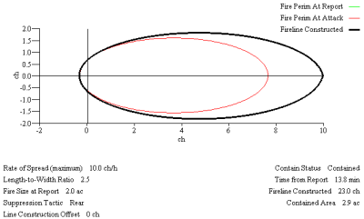

|
Contained Area |
Contained area is the size of the fire enclosed by the fireline contructed (containment line). The contained area will be larger than the fire area at the time of containment when the line construction offset is greater than zero. If the fire escapes because resource productivity is insufficient or because all specified resources have arrived at the fire and their duration times have expired, the contained area is given as -1.
| I/O | Module | If | Notes |
| Input | None | ||
| Output | CONTAIN |
Contained area is illustrated in the containment diagram as the area within the line indicating the fireline constructed.
|  |
Contained area differs from the area output from the SIZE module. SIZE estimates area of a point source fire in the absence of suppression for the elapsed time entered. The area output from SIZE is the fire size at report input to CONTAIN when both modules are checked. Contained area in CONTAIN estimates the area of the fire at containment resulting from suppression as indicated on the worksheet.